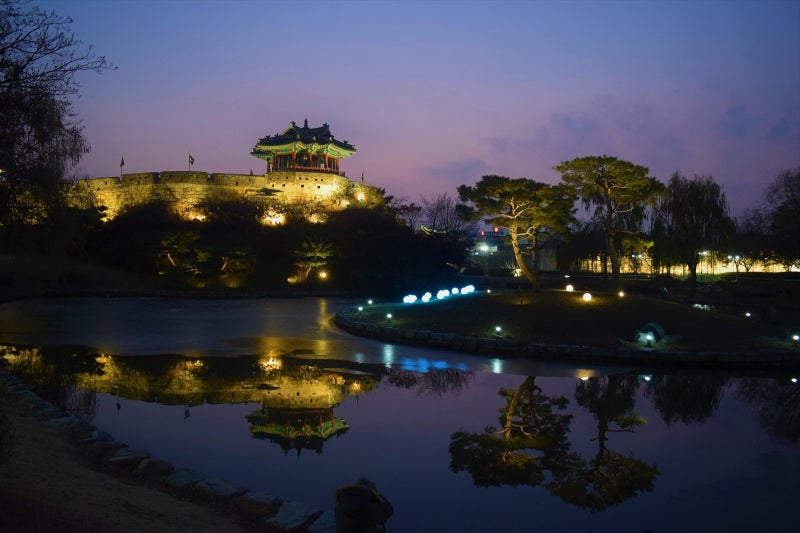

Home
환영합니다!
수원
제가 태어난 곳은 수원입니다. 수원시는 대한민국 경기도 중남부에 있는 특례시이자 경기도청 소재지입니다. 수원의 대표적 명소는 고고학적 가치를 지닌 수원화성이 있으며, 광교호수공원은 야경이 아름다워 밤에도 산책을 즐기는 사람들이 많습니다. 수원 통닭골목은 저렴한 가격에 비해 양이 푸짐해 입소문을 타고 전국 각지에서 많은 이들이 찾는 장소 입니다.
 방화수류정 아래에는 용연(龍淵)이라는 작은 연못이 있고 수원천과도 연결되는 연못인데 봄과 가을에 피크닉을 즐기고자 하는 이들로 북적이는 장소입니다. 이른바 SNS상에서 퍼진 수원의 인기 관광 명소입니다.
여행
여행지
음식
좋아하는 음식
취미
좋아하는 것